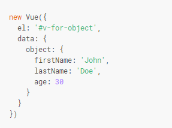

初始化：
{{name}}
列表循环：
与angular的repeat循环相对应，Vue采用了for，显得更加简洁清晰直白
值得注意的是，在控制台中我们执行语句“vm.users.push({id:5,name:'资管家'})”页面会自动增加一行
建议尽可能在使用 v-for 时提供 key，除非遍历输出的 DOM 内容非常简单，或者是刻意依赖默认行为以获取性能上的提升。
条件渲染：
在v-if紧接着的dom节点可以追加一个v-else判断，二者中间不可有其它节点
此外，v-else-if，顾名思义，充当 v-if 的“else-if 块”，可以连续使用：
当然，我们也可以使用多个v-if来进行判断
v-show用法更为简单
v-for循环一个对象的属性

在v-for中也可以用of代替in作为分隔符
v-for中的参数设置
普通写法，v-for="value in arr"，value即表示属性值的或数组元素
带参数写法，v-for="(value,key) in arr",第二个参数表示(1)对象键名(2)数组元素索引
带参数写法，v-for="(value,key,index) in arr"第三个参数表示对象中key的索引，数组不处理index参数
数组操作中注意：
当使用filter(), concat() 和 slice()等操作时，不会触发页面dom的刷新，因为原数组并未发生改变，但总是返回一个新数组，我们可以用新数组替换旧数组来实现dom的渲染
由于 JavaScript 的限制，Vue 不能检测以下变动的数组：
当你修改数组的长度时，例如：vm.items.length = newLength
为了解决第一类问题，以下两种方式都可以实现和 vm.items[indexOfItem] = newValue 相同的效果，同时也将触发状态更新：
Vue.set(vm.items, indexOfItem, newValue) vm.items.splice(indexOfItem, 1, newValue)
响应式数据：
在new Vue时绑定到data的数据才会被跟踪，但是后期想要添加新的响应式数据可以使用Vue.set()
例如：Vue.set(vm.object, 'money', 100)
则显示：{{object.money}}
vue提供了对象合并的方法Object.assign();该方法将返回新的对象，当我们需要为对象设置多个响应式属性时：
vm.chen = Object.assign({}, vm.chen, {age: 24, face: '大'})
注意：assign中{}作为第一参数
chen.name: {{chen.name}}
chen.age: {{chen.age}}
chen.face: {{chen.face}}
显示过滤/排序结果
（1）利用计算属性，将数据过滤好之后再
（2）在计算属性不适用的情况下 (例如，在嵌套 v-for 循环中) 你可以使用一个 method 方法：
常规过滤器：
{{object.firstName | nameUp}}
{object.firstName | nameUp}
过滤器也可以串联使用如：{object.firstName | nameUp | nameLo}
{{object.firstName | nameUp | nameLo}}
过滤器是 JavaScript 函数，因此可以接收参数：
{ message | filterA('arg1', arg2) }
其中 message 的值作为第一个参数，普通字符串 'arg1' 作为第二个参数，表达式 arg2 的值作为第三个参数
表单绑定：
Message is: {{ message }}
单个复选框，绑定到布尔值：
多个复选框，绑定到同一个数组：
修饰符的使用：
v-model.number确保输入的是数值型
v-model.trim去除首尾的空格